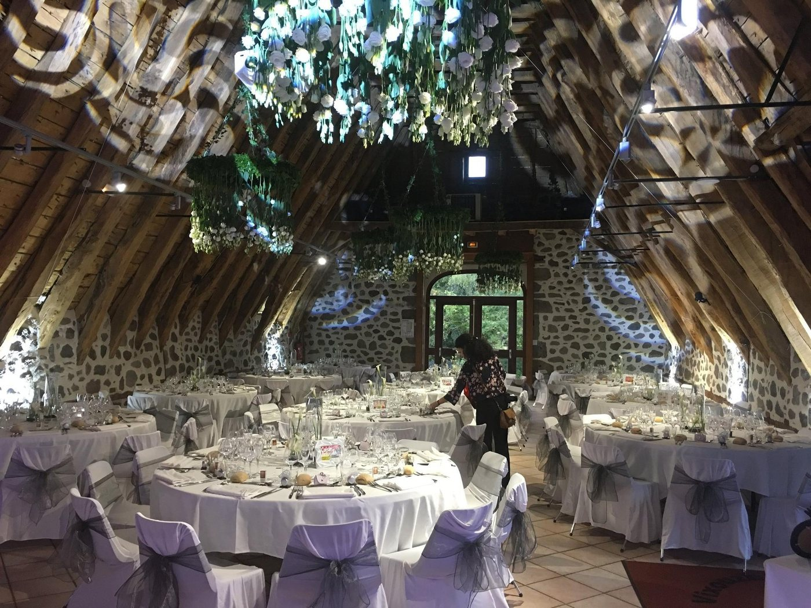
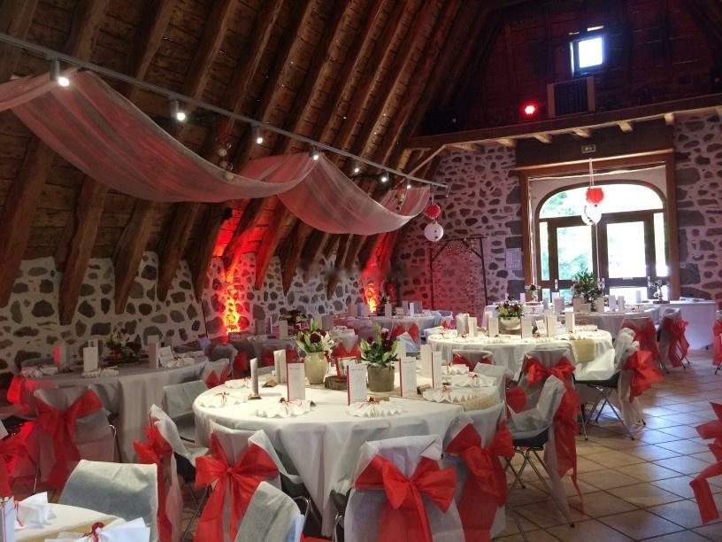

Accueil · Mariages
Votre mariage au château
Perché au cœur des Monts d’Auvergne, avec une vue unique à 360 degrés, le château offre un cadre féérique pour célébrer le plus beau jour de votre vie.
Un mariage, deux nuits
- La veilleL’arrivée
Vos proches prennent leurs chambres, la décoration se monte dans les salles.
- Le jourLa cérémonie
Laïque, sous les tilleuls face à la vallée, jusqu’à 200 personnes.
- Le jourLe vin d’honneur
Dans la Cour Médiévale, entre les donjons et les bassins, pendant les photos.
- Le soirLe dîner
Sous la charpente du Pavillon au Roy, puis la piste de danse jusqu’à cinq heures.
- Le lendemainLe brunch
Dans la cour, avec ceux qui ont dormi sur place, avant le départ à dix-sept heures.
Trois façons de célébrer
Le Pack Noces
- Le Pavillon au Roy, jusqu’à 200 convives assis
- La Cour Médiévale, jusqu’à 350 en cocktail
- L’Esplanade des Tilleuls pour la cérémonie
- La Galerie des Arts, s’il pleut
- Les 200 chaises, les tables et les tréteaux
- Les trois parkings privés
La musique jusqu’à cinq heures, le départ à dix-sept heures.
Le Pack Premium
- Tout le Pack Noces
- La vidéoprojection 5 000 lumens et son écran de 3 m sur 2
- La sonorisation quadriphonique et les micros HF
- La lumière événementielle à LED automatisées
- Le podium, le pupitre et la scène de 20 m²
- Les illuminations du château en soirée
Un spectacle son et lumière personnalisé, en option.
Le Pack Cérémonie Laïque reprend l’expérience complète, de l’Esplanade des Tilleuls au brunch du lendemain. Appelez-nous au 06 77 18 46 62 pour le devis à votre date.
Ce que vous pouvez ajouter
Le tournage par drone se fait au Mavic 3 Classic en 5,1k, à l’Avata en cinématique et au Mini 2 en 4K. Le pack à 1 125 € TTC ajoute le dîner du soir au vin d’honneur et au brunch.
Des habitués des lieux
Pour une réception sans souci, le château vous met en relation avec des prestataires qui connaissent le domaine : traiteurs, DJ, fleuristes et photographes.
- Les traiteurs partenaires
Ils connaissent la cuisine du Pavillon au Roy et son office de préparation, au niveau bas de la salle.
- La photographie
Le château travaille avec Jeremy Bismuth Photographie, noté 5,0 sur 81 avis sur Mariages.net.
- La décoration et la musique
Fleuristes, DJ et orchestres, la décoration lumineuse et les drapés de la salle.



Les mots des couples
« Nous avons passé un week-end formidable nous et notre famille au château. Un lieu incroyable. »
« Le coup de cœur pour ce magnifique endroit dès les premières minutes de la visite. »
« Un cadre unique, le château authentique avec la cour d’honneur, la salle pleine de charme avec ses poutres apparentes. »
Votre date est-elle encore libre ?
Le château ne reçoit qu’un seul événement à la fois. Ouvrez le calendrier : vous voyez tout de suite les jours encore libres, puis vous nous envoyez votre demande en deux clics.
Une question avant tout ? Écrivez-nous
- 1Votre datele calendrier montre les jours encore libres
- 2Votre événementun mariage, un séminaire, une fête de famille
- 3Vos invitésde 50 à 350, assis ou en cocktail
- 4La visitenous vous rappelons pour la caler
Avant de réserver
Combien coûte une réception au château ?
La location du domaine commence à 8 800 €, selon la date, la formule et le nombre d’invités. Trois formules existent : le Pack Noces avec les essentiels, le Pack Premium qui ajoute les installations techniques, le Pack Cérémonie Laïque pour l’expérience complète. Appelez-nous au 06 77 18 46 62 pour un devis à votre date.
Combien d’invités peut-on recevoir ?
De 50 à 350 personnes. Le Pavillon au Roy reçoit jusqu’à 200 convives assis et 280 en cocktail, la Cour Médiévale jusqu’à 350 en cocktail, l’Esplanade des Tilleuls jusqu’à 200 pour la cérémonie. Le château ne reçoit qu’un seul événement à la fois : le domaine entier est à vous.
Peut-on dormir sur place ?
Oui : onze chambres accueillent de seize à trente adultes, dont une suite nuptiale de 70 m² avec son salon privé. Elles se louent dans le cadre d’un événement au château. Les familles nombreuses prennent les chambres de la Tour, jusqu’à quatre couchages.
Qui s’occupe du repas ?
Le château travaille avec des traiteurs partenaires, qui connaissent la cuisine du Pavillon au Roy et son office de préparation. Les prestataires référencés couvrent aussi le DJ, les fleuristes et les photographes. Dites-nous votre projet, nous vous mettons en relation.
Et s’il pleut le jour de la cérémonie ?
La Galerie des Arts prend le relais pour le vin d’honneur, en quelques minutes, sans rien changer au reste de la journée. La tente de l’Esplanade des Tilleuls abrite la cérémonie et la piste de danse.
Jusqu’à quelle heure dure la soirée ?
La musique peut se prolonger jusqu’à cinq heures du matin dans le Pavillon au Roy. Le départ se fait le lendemain à dix-sept heures. Une navette ramène vos invités, pour trois heures ou pour toute la nuit.
Où se garent les invités ?
Trois parkings privés accueillent plus de cent voitures sur le domaine, avec des places supplémentaires à proximité. La gare de Polminhac est à deux minutes, l’aéroport d’Aurillac à vingt-deux minutes.
Comment visiter le château ?
Le château est ouvert aux repérages sur rendez-vous. Choisissez une date dans le calendrier ou écrivez-nous : nous vous rappelons pour organiser la visite.